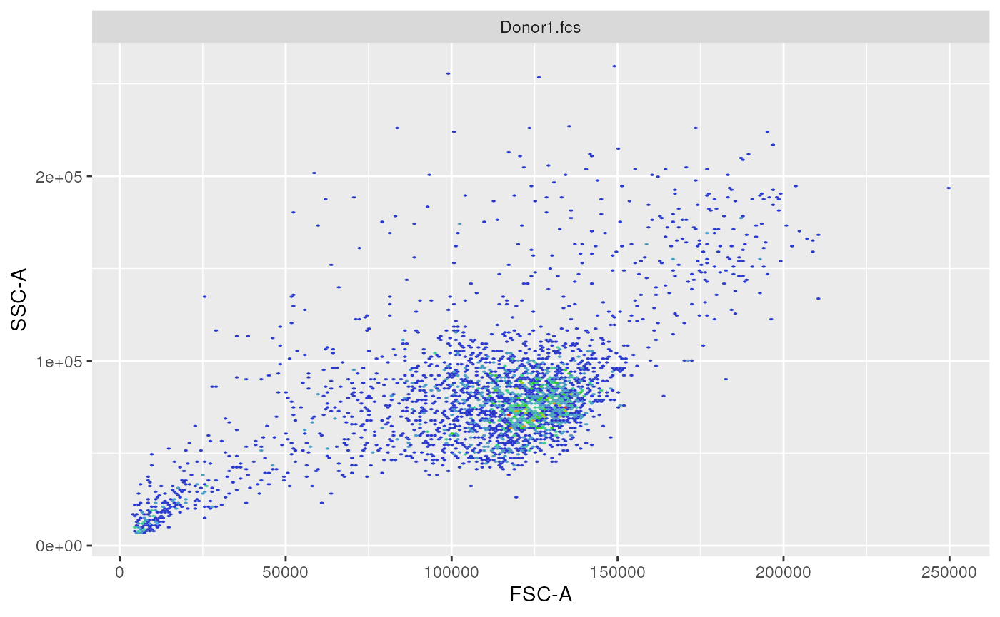
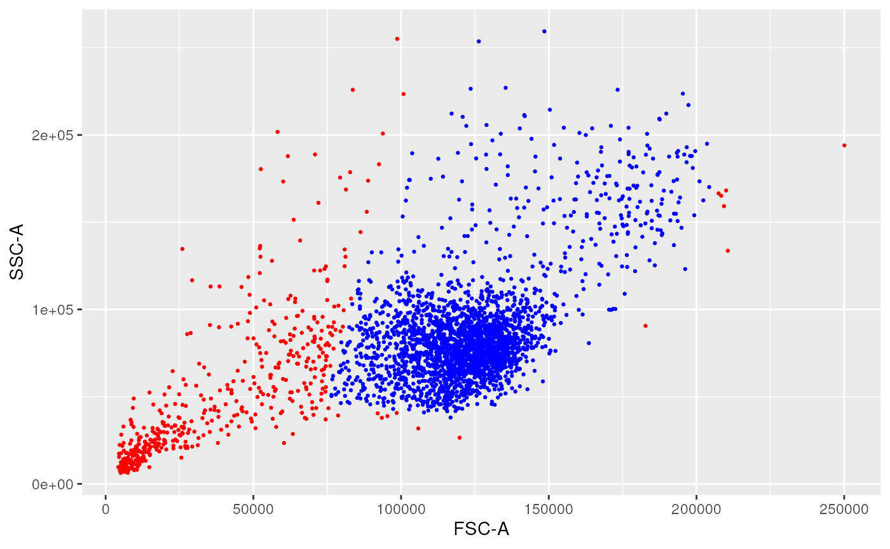

Automation and Visualization of Flow Cytometry Data Analysis Pipelines
Philippe Hauchamps
Laurent Gatto
Source:vignettes/CytoPipeline.Rmd
CytoPipeline.RmdAbstract
This vignette describes the functionality implemented in the
CytoPipeline package. CytoPipeline
provides support for automation and visualization of flow
cytometry data analysis pipelines. In the current state, the
package focuses on the pre-processing and quality control part.
This vignette is distributed under a CC BY-SA 4.0 license.
Introduction
The CytoPipeline package provides infrastructure to
support the definition, run and standardized visualization of
pre-processing and quality control pipelines for flow cytometry data.
This infrastructure consists of two main S4 classes,
i.e. CytoPipeline and CytoProcessingStep, as
well as dedicated wrapper functions around selected third-party package
methods often used to implement these pre-processing steps.
In the following sections, we demonstrate how to create a
CytoPipeline object implementing a simple pre-processing
pipeline, how to run it and how to retrieve and visualize the results
after each step.
Example dataset
The example dataset that will be used throughout this vignette is derived from a reference public dataset accompanying the OMIP-021 (Optimized Multicolor Immunofluorescence Panel 021) article (Gherardin et al. 2014).
A sub-sample of this public dataset is built-in in the
CytoPipeline package, as the OMIP021 dataset. See
./scripts/MakeOMIP021Sample.R for more details on how the
OMIP021 dataset was created.
Note that in the CytoPipelinepackage, as in the current
vignette, matrices of flow cytometry events intensities are stored as
flowCore::flowFrame objects (Ellis B
2022).
Example of pre-processing and QC pipelines
Let’s assume that we want to pre-process the two samples of the
OMIP021 dataset, and let’s assume that we want to compare
what we would obtain when pre-processing these files using two different
QC methods.
In the first pre-processing pipeline, we will use the flowAI QC method (Monaco et al. 2016), while in the second pipeline, we will use the PeacoQC method (Emmaneel et al. 2021). Note that when we here refer to QC method, we mean the algorithm used to ensure stability (stationarity) of the channel signals in time.
In both pipelines, the first part consists in estimating appropriate
scale transformation functions for all channels present in the sample
flowFrame. In order to do this, we propose the following
scale transformation processing queue (Fig. 1):
- reading the two samples
.fcsfiles - removing the margin events from each file
- applying compensation for each file
- aggregating and sub-sampling from each file
- estimating the scale transformations from the aggregated and sub-sampled data

Scale transform processing queue
When this first part is done, one can apply pre-processing for each file one by one. However, depending on the choice of QC method, the order of steps needs to be slightly different:
- when using flowAI, it is advised to eliminate the ‘bad events’ starting from raw data (see (Monaco et al. 2016))
- when using PeacoQC, it is advised to eliminate the ‘bad events’ from already compensated and scale transformed data (see (Emmaneel et al. 2021))
Therefore, we propose the following pre-processing queues represented in Fig. 2.

Pre-processing queue for two different pipeline settings
Building the CytoPipeline
CytoPipeline is the central S4 class used in the
CytoPipeline package to represent a flow cytometry
pre-processing pipeline. The main slots of CytoPipeline
objects are :
an
experimentName, which gives a name to a particular user definition of a pre-processing pipeline. The experiment here, is not related to an assay experiment, but refers to a specific way to design a pipeline. For example, in the current use case, we will define twoexperimentNames, one to refer to the flowAI pipeline, and another one to refer to the PeacoQC pipeline (see previous section);a vector of
sampleFiles, which are.fcsraw data files on which one need to run the pre-processing pipeline;two processing queues, i.e. a
scaleTransformProcessingQueue, and aflowFramesPreProcessingQueue, which correspond to the two parts described in previous section. Each of these queues are composed of one or severalCytoProcessingStepobjects, will be processed in linear sequence, the output of one step being the input of the next step.
Note there are important differences between the two processing
queues. On the one hand, the scaleTransformProcessingQueue
takes the vector of all sample files as an input, and will be run first
by convention, and only once. On the other hand, the
flowFramesPreProcessingQueue will be run after the scale
transformation, on each sample file one after the other, in a loop. The
final output of the scaleTransformProcessingQueue, which
should be a flowCore::tranformList, is also provided as
input to the flowFramesPreProcessingQueue, by
convention.
In the next subsections, we show the different steps involved in
creating a CytoPipeline object.
preliminaries: paths definition
In the following code, rawDataDir refers to the
directory in which the .fcs raw data files are stored.
workDir will be used as root directory to store the disk
cache. Indeed, when running the CytoPipeline objects, all
the different step outputs will be store in a BiocFileCache
instance, in a sub-directory that will be created in
workDirand of which the name will be set to the pipeline
experimentName.
# raw data
rawDataDir <- system.file("extdata", package = "CytoPipeline")
# output files
workDir <- suppressMessages(withr::local_tempdir())first method: step by step, using CytoPipeline methods
In this sub-section, we build a CytoPipeline object by
successively adding CytoProcessingStep objects to the two
different processing queues. We do this for the PeacoQC pipeline.
# main parameters : sample files and output files
experimentName <- "OMIP021_PeacoQC"
sampleFiles <- paste0(rawDataDir, "/", list.files(rawDataDir,
pattern = "sample_"))
pipelineParams <- list()
pipelineParams$experimentName <- experimentName
pipelineParams$sampleFiles <- sampleFiles
pipL_PeacoQC <- CytoPipeline(pipelineParams)
### SCALE TRANSFORMATION STEPS ###
pipL_PeacoQC <-
addProcessingStep(pipL_PeacoQC,
whichQueue = "scale transform",
CytoProcessingStep(
name = "flowframe_read",
FUN = "readSampleFiles",
ARGS = list(
whichSamples = "all",
truncate_max_range = FALSE,
min.limit = NULL
)
)
)
pipL_PeacoQC <-
addProcessingStep(pipL_PeacoQC,
whichQueue = "scale transform",
CytoProcessingStep(
name = "remove_margins",
FUN = "removeMarginsPeacoQC",
ARGS = list()
)
)
pipL_PeacoQC <-
addProcessingStep(pipL_PeacoQC,
whichQueue = "scale transform",
CytoProcessingStep(
name = "compensate",
FUN = "compensateFromMatrix",
ARGS = list(matrixSource = "fcs")
)
)
pipL_PeacoQC <-
addProcessingStep(pipL_PeacoQC,
whichQueue = "scale transform",
CytoProcessingStep(
name = "flowframe_aggregate",
FUN = "aggregateAndSample",
ARGS = list(
nTotalEvents = 10000,
seed = 0
)
)
)
pipL_PeacoQC <-
addProcessingStep(pipL_PeacoQC,
whichQueue = "scale transform",
CytoProcessingStep(
name = "scale_transform_estimate",
FUN = "estimateScaleTransforms",
ARGS = list(
fluoMethod = "estimateLogicle",
scatterMethod = "linear",
scatterRefMarker = "BV785 - CD3"
)
)
)
### FLOW FRAME PRE-PROCESSING STEPS ###
pipL_PeacoQC <-
addProcessingStep(pipL_PeacoQC,
whichQueue = "pre-processing",
CytoProcessingStep(
name = "flowframe_read",
FUN = "readSampleFiles",
ARGS = list(
truncate_max_range = FALSE,
min.limit = NULL
)
)
)
pipL_PeacoQC <-
addProcessingStep(pipL_PeacoQC,
whichQueue = "pre-processing",
CytoProcessingStep(
name = "remove_margins",
FUN = "removeMarginsPeacoQC",
ARGS = list()
)
)
pipL_PeacoQC <-
addProcessingStep(pipL_PeacoQC,
whichQueue = "pre-processing",
CytoProcessingStep(
name = "compensate",
FUN = "compensateFromMatrix",
ARGS = list(matrixSource = "fcs")
)
)
pipL_PeacoQC <-
addProcessingStep(
pipL_PeacoQC,
whichQueue = "pre-processing",
CytoProcessingStep(
name = "perform_QC",
FUN = "qualityControlPeacoQC",
ARGS = list(
preTransform = TRUE,
min_cells = 150, # default
max_bins = 500, # default
step = 500, # default,
MAD = 6, # default
IT_limit = 0.55, # default
force_IT = 150, # default
peak_removal = 0.3333, # default
min_nr_bins_peakdetection = 10 # default
)
)
)
pipL_PeacoQC <-
addProcessingStep(
pipL_PeacoQC,
whichQueue = "pre-processing",
CytoProcessingStep(
name = "remove_doublets",
FUN = "removeDoubletsFlowStats",
ARGS = list(
areaChannels = c("FSC-A", "SSC-A"),
heightChannels = c("FSC-H", "SSC-H"),
wider_gate = TRUE
)
)
)
pipL_PeacoQC <-
addProcessingStep(pipL_PeacoQC,
whichQueue = "pre-processing",
CytoProcessingStep(
name = "remove_debris",
FUN = "removeDebrisFlowClustTmix",
ARGS = list(
FSCChannel = c("FSC-A"),
SSCChannel = c("SSC-A"),
nClust = 3,
level = 0.97,
B = 100,
verbose = TRUE
)
)
)
pipL_PeacoQC <-
addProcessingStep(pipL_PeacoQC,
whichQueue = "pre-processing",
CytoProcessingStep(
name = "remove_dead_cells",
FUN = "removeDeadCellsGateTail",
ARGS = list(
FSCChannel = c("FSC-A"),
LDMarker = "L/D Aqua - Viability",
num_peaks = 2,
ref_peak = 2,
strict = FALSE,
positive = FALSE
)
)
)second method: in one go, using JSON file input
In this sub-section, we build the flowAI pipeline, this time using a
JSON file as an input. Note that the experimentName is here
specified in the JSON file itself.
jsonDir <- rawDataDir
# creation on CytoPipeline object,
# using json file as input
pipL_flowAI <-
CytoPipeline(paste0(jsonDir, "/OMIP021_flowAI_pipeline.json"))Executing pipelines
# execute PeacoQC pipeline
execute(pipL_PeacoQC, path = workDir)## ####################################################### ### running SCALE TRANSFORMATION processing steps ##### ####################################################### Proceeding with step 1 [flowframe_read] ...## Proceeding with step 2 [remove_margins] ...## Warning in PeacoQC::RemoveMargins(ff, channels = channel4Margins): More than
## 10.12 % is considered as a margin event in file sample_Donor1.fcs . This should
## be verified.## Proceeding with step 3 [compensate] ...## Proceeding with step 4 [flowframe_aggregate] ...## Proceeding with step 5 [scale_transform_estimate] ...## estimating logicle transformations for fluorochrome channels...## Estimating linear transformation for scatter channels : reference marker = BV785 - CD3...## applying specific linear transformation for FSC-A channel...## initial quantiles : q5 = 48809.1266 ; q95 = 182769.1664## target quantiles : q5 = 0.3996 ; q95 = 2.9603## a = 1.91e-05 ; b = -5.33e-01## applying FSC-A linear transformation for FSC-H channel...## applying specific linear transformation for SSC-A channel...## initial quantiles : q5 = 41296.8164 ; q95 = 223620.1273## target quantiles : q5 = 0.3996 ; q95 = 2.9603## a = 1.40e-05 ; b = -1.80e-01## applying SSC-A linear transformation for SSC-H channel...## ####################################################### ### NOW PRE-PROCESSING FILE /__w/_temp/Library/CytoPipeline/extdata/sample_Donor1.fcs...## ####################################################### Proceeding with step 1 [flowframe_read] ...## Proceeding with step 2 [remove_margins] ...## Warning in PeacoQC::RemoveMargins(ff, channels = channel4Margins): More than
## 10.12 % is considered as a margin event in file sample_Donor1.fcs . This should
## be verified.## Proceeding with step 3 [compensate] ...## Proceeding with step 4 [perform_QC] ...## Applying PeacoQC method...## Warning in CheckInputSignalStability(ff, channels, determine_good_cells, : There
## is an inconsistancy in the time channel. It seems that not all the cells are
## ordered according to time in the flowframe.## Starting quality control analysis for sample_Donor1.fcs## Warning in FindIncreasingDecreasingChannels(breaks, ff, channels, plot, :
## There seems to be an increasing or decreasing trend in a channel for
## sample_Donor1.fcs . Please inspect this in the overview figure.## Calculating peaks## Warning in PeacoQC::PeacoQC(ff = ffIn, channels = channel4QualityControl, :
## There are not enough bins for a robust isolation tree analysis.## MAD analysis removed 16.69% of the measurements## The algorithm removed 16.69% of the measurements## Proceeding with step 5 [remove_doublets] ...## Warning: replacing previous import 'flowViz::contour' by 'graphics::contour'
## when loading 'flowStats'## Proceeding with step 6 [remove_debris] ...## The prior specification has no effect when usePrior=no## Using the serial version of flowClust## Proceeding with step 7 [remove_dead_cells] ...## ####################################################### ### NOW PRE-PROCESSING FILE /__w/_temp/Library/CytoPipeline/extdata/sample_Donor2.fcs...## ####################################################### Proceeding with step 1 [flowframe_read] ...## Proceeding with step 2 [remove_margins] ...## Proceeding with step 3 [compensate] ...## Proceeding with step 4 [perform_QC] ...## Applying PeacoQC method...## Warning in CheckInputSignalStability(ff, channels, determine_good_cells, : There
## is an inconsistancy in the time channel. It seems that not all the cells are
## ordered according to time in the flowframe.## Starting quality control analysis for sample_Donor2.fcs## Warning in FindIncreasingDecreasingChannels(breaks, ff, channels, plot, :
## There seems to be an increasing or decreasing trend in a channel for
## sample_Donor2.fcs . Please inspect this in the overview figure.## Calculating peaks## Warning in PeacoQC::PeacoQC(ff = ffIn, channels = channel4QualityControl, :
## There are not enough bins for a robust isolation tree analysis.## MAD analysis removed 14.89% of the measurements## The algorithm removed 14.89% of the measurements## Proceeding with step 5 [remove_doublets] ...## Proceeding with step 6 [remove_debris] ...## The prior specification has no effect when usePrior=no## Using the serial version of flowClust## Proceeding with step 7 [remove_dead_cells] ...## ####################################################### ### running SCALE TRANSFORMATION processing steps ##### ####################################################### Proceeding with step 1 [flowframe_read] ...## Proceeding with step 2 [remove_margins] ...## Warning in PeacoQC::RemoveMargins(ff, channels = channel4Margins): More than
## 10.12 % is considered as a margin event in file sample_Donor1.fcs . This should
## be verified.## Proceeding with step 3 [compensate] ...## Proceeding with step 4 [flowframe_aggregate] ...## Proceeding with step 5 [scale_transform_estimate] ...## estimating logicle transformations for fluorochrome channels...## Estimating linear transformation for scatter channels : reference marker = BV785 - CD3...## applying specific linear transformation for FSC-A channel...## initial quantiles : q5 = 48809.1266 ; q95 = 182769.1664## target quantiles : q5 = 0.3996 ; q95 = 2.9603## a = 1.91e-05 ; b = -5.33e-01## applying FSC-A linear transformation for FSC-H channel...## applying specific linear transformation for SSC-A channel...## initial quantiles : q5 = 41296.8164 ; q95 = 223620.1273## target quantiles : q5 = 0.3996 ; q95 = 2.9603## a = 1.40e-05 ; b = -1.80e-01## applying SSC-A linear transformation for SSC-H channel...## ####################################################### ### NOW PRE-PROCESSING FILE ./sample_Donor1.fcs...## ####################################################### Proceeding with step 1 [flowframe_read] ...## Proceeding with step 2 [perform_QC] ...## Applying flowAI method...## Quality control for the file: Donor1## Warning in ord_fcs_time(set[[i]], timeCh): Expression data in the file
## sample_Donor1.fcs were not originally ordered by time.## 3.18% of anomalous cells detected in the flow rate check.
## 0% of anomalous cells detected in signal acquisition check.
## 0.12% of anomalous cells detected in the dynamic range check.## Proceeding with step 3 [compensate] ...## Proceeding with step 4 [remove_doublets] ...## Proceeding with step 5 [remove_debris] ...## The prior specification has no effect when usePrior=no## Using the serial version of flowClust## Proceeding with step 6 [remove_dead_cells] ...## ####################################################### ### NOW PRE-PROCESSING FILE ./sample_Donor2.fcs...## ####################################################### Proceeding with step 1 [flowframe_read] ...## Proceeding with step 2 [perform_QC] ...## Applying flowAI method...## Quality control for the file: Donor2## Warning in ord_fcs_time(set[[i]], timeCh): Expression data in the file
## sample_Donor2.fcs were not originally ordered by time.## 4.52% of anomalous cells detected in the flow rate check.
## 0% of anomalous cells detected in signal acquisition check.
## 0.1% of anomalous cells detected in the dynamic range check.## Proceeding with step 3 [compensate] ...## Proceeding with step 4 [remove_doublets] ...## Proceeding with step 5 [remove_debris] ...## The prior specification has no effect when usePrior=no## Using the serial version of flowClust## Proceeding with step 6 [remove_dead_cells] ...Inspecting results and visualization
Plotting processing queues as workflow graphs
# # plot work flow graphs
# plotCytoPipelineProcessingQueue(
# pipL_PeacoQC,
# purpose = "description",
# whichQueue = "scale transform",
# title = FALSE)
#
# par(mfrow = c(1,2))
#
# # plot work flow graphs
# plotCytoPipelineProcessingQueue(
# pipL_PeacoQC,
# purpose = "description",
# whichQueue = "pre-processing",
# title = TRUE)
#
# # plot work flow graphs
# plotCytoPipelineProcessingQueue(
# pipL_flowAI,
# purpose = "description",
# whichQueue = "pre-processing",
# title = TRUE)
# plot work flow graphs
plotCytoPipelineProcessingQueue(
pipL_PeacoQC,
whichQueue = "scale transform",
path = workDir)
plotCytoPipelineProcessingQueue(
pipL_PeacoQC,
whichQueue = "pre-processing",
sampleFile = 1,
path = workDir)
plotCytoPipelineProcessingQueue(
pipL_flowAI,
whichQueue = "scale transform",
path = workDir)
plotCytoPipelineProcessingQueue(
pipL_flowAI,
whichQueue = "pre-processing",
sampleFile = 1,
path = workDir)Obtaining information about pipeline generated objects
getCytoPipelineObjectInfos(pipL_PeacoQC,
path = workDir,
whichQueue = "scale transform")## ObjectName ObjectClass
## 1 flowframe_read_obj flowSet
## 2 remove_margins_obj flowSet
## 3 compensate_obj flowSet
## 4 flowframe_aggregate_obj flowFrame
## 5 scale_transform_estimate_obj transformList
getCytoPipelineObjectInfos(pipL_PeacoQC,
path = workDir,
whichQueue = "pre-processing",
sampleFile = sampleFiles(pipL_PeacoQC)[1])## ObjectName ObjectClass
## 1 flowframe_read_obj flowFrame
## 2 remove_margins_obj flowFrame
## 3 compensate_obj flowFrame
## 4 perform_QC_obj flowFrame
## 5 remove_doublets_obj flowFrame
## 6 remove_debris_obj flowFrame
## 7 remove_dead_cells_obj flowFrameRetrieving flow frames at different steps and plotting them
# example of retrieving a flow frame
# at a given step
ff <- getCytoPipelineFlowFrame(
pipL_PeacoQC,
whichQueue = "pre-processing",
sampleFile = 1,
objectName = "remove_doublets_obj",
path = workDir)
#
ff2 <- getCytoPipelineFlowFrame(
pipL_PeacoQC,
whichQueue = "pre-processing",
sampleFile = 1,
objectName = "remove_debris_obj",
path = workDir)
ggplotEvents(ff, xChannel = "FSC-A")
ggplotEvents(ff, xChannel = "FSC-A", yChannel = "SSC-A")
ggplotFilterEvents(ff, ff2, xChannel = "FSC-A", yChannel = "SSC-A")
example of retrieving another type of object
We now provide an example on how to retrieve an object from the
cache, that is not specifically a flowCore::flowFrame.
Here we retrieve a flowCore::flowSet object, which
represents a set offlowCore::flowFrameobjects, that was obtained after the
compensation step of the scale transformation processing queue, prior to
aggregating the two samples.
obj <- getCytoPipelineObjectFromCache(pipL_PeacoQC,
path = workDir,
whichQueue = "scale transform",
objectName = "compensate_obj")
show(obj)## A flowSet with 2 experiments.
##
## column names(22): FSC-A FSC-H ... Time Original_IDSession information
## R version 4.2.1 (2022-06-23)
## Platform: x86_64-pc-linux-gnu (64-bit)
## Running under: Ubuntu 20.04.5 LTS
##
## Matrix products: default
## BLAS: /usr/lib/x86_64-linux-gnu/openblas-pthread/libblas.so.3
## LAPACK: /usr/lib/x86_64-linux-gnu/openblas-pthread/liblapack.so.3
##
## locale:
## [1] LC_CTYPE=en_US.UTF-8 LC_NUMERIC=C
## [3] LC_TIME=en_US.UTF-8 LC_COLLATE=en_US.UTF-8
## [5] LC_MONETARY=en_US.UTF-8 LC_MESSAGES=en_US.UTF-8
## [7] LC_PAPER=en_US.UTF-8 LC_NAME=C
## [9] LC_ADDRESS=C LC_TELEPHONE=C
## [11] LC_MEASUREMENT=en_US.UTF-8 LC_IDENTIFICATION=C
##
## attached base packages:
## [1] stats graphics grDevices utils datasets methods base
##
## other attached packages:
## [1] CytoPipeline_0.99.0 flowCore_2.9.1 BiocStyle_2.25.0
##
## loaded via a namespace (and not attached):
## [1] changepoint_2.2.3 circlize_0.4.15 BiocFileCache_2.5.0
## [4] systemfonts_1.0.4 plyr_1.8.7 splines_4.2.1
## [7] fda_6.0.5 ggplot2_3.3.6 digest_0.6.29
## [10] foreach_1.5.2 htmltools_0.5.3 fansi_1.0.3
## [13] magrittr_2.0.3 memoise_2.0.1 cluster_2.1.4
## [16] doParallel_1.0.17 ks_1.13.5 hdrcde_3.4
## [19] aws.signature_0.6.0 ComplexHeatmap_2.13.1 RcppParallel_5.1.5
## [22] matrixStats_0.62.0 R.utils_2.12.0 fds_1.8
## [25] pkgdown_2.0.6.9000 flowWorkspace_4.9.1 cytolib_2.9.1
## [28] jpeg_0.1-9 colorspace_2.0-3 blob_1.2.3
## [31] rappdirs_0.3.3 rrcov_1.7-1 textshaping_0.3.6
## [34] xfun_0.33 dplyr_1.0.10 crayon_1.5.1
## [37] RCurl_1.98-1.8 jsonlite_1.8.0 hexbin_1.28.2
## [40] graph_1.75.0 zoo_1.8-10 iterators_1.0.14
## [43] glue_1.6.2 flowClust_3.35.0 gtable_0.3.1
## [46] zlibbioc_1.43.0 GetoptLong_1.0.5 ggcyto_1.25.1
## [49] IDPmisc_1.1.20 Rgraphviz_2.41.1 shape_1.4.6
## [52] BiocGenerics_0.43.4 DEoptimR_1.0-11 scales_1.2.1
## [55] mvtnorm_1.1-3 DBI_1.1.3 Rcpp_1.0.9
## [58] clue_0.3-61 openCyto_2.9.4 bit_4.0.4
## [61] mclust_5.4.10 deSolve_1.33 stats4_4.2.1
## [64] httr_1.4.4 RColorBrewer_1.1-3 ellipsis_0.3.2
## [67] rainbow_3.6 farver_2.1.1 pkgconfig_2.0.3
## [70] XML_3.99-0.10 R.methodsS3_1.8.2 flowViz_1.61.1
## [73] sass_0.4.2 dbplyr_2.2.1 deldir_1.0-6
## [76] utf8_1.2.2 labeling_0.4.2 diagram_1.6.5
## [79] reshape2_1.4.4 flowStats_4.9.2 tidyselect_1.1.2
## [82] rlang_1.0.5 munsell_0.5.0 tools_4.2.1
## [85] cachem_1.0.6 cli_3.4.0 generics_0.1.3
## [88] RSQLite_2.2.17 aws.s3_0.3.21 evaluate_0.16
## [91] stringr_1.4.1 fastmap_1.1.0 yaml_2.3.5
## [94] ragg_1.2.2 knitr_1.40 bit64_4.0.5
## [97] fs_1.5.2 robustbase_0.95-0 purrr_0.3.4
## [100] RBGL_1.73.0 R.oo_1.25.0 PeacoQC_1.7.0
## [103] pracma_2.3.8 xml2_1.3.3 compiler_4.2.1
## [106] filelock_1.0.2 curl_4.3.2 png_0.1-7
## [109] tibble_3.1.8 bslib_0.4.0 pcaPP_2.0-2
## [112] stringi_1.7.8 highr_0.9 desc_1.4.2
## [115] lattice_0.20-45 Matrix_1.5-1 vctrs_0.4.1
## [118] pillar_1.8.1 lifecycle_1.0.2 flowAI_1.27.2
## [121] BiocManager_1.30.18 jquerylib_0.1.4 GlobalOptions_0.1.2
## [124] data.table_1.14.2 bitops_1.0-7 corpcor_1.6.10
## [127] R6_2.5.1 latticeExtra_0.6-30 bookdown_0.29
## [130] KernSmooth_2.23-20 gridExtra_2.3 RProtoBufLib_2.9.0
## [133] IRanges_2.31.2 codetools_0.2-18 gtools_3.9.3
## [136] MASS_7.3-58.1 assertthat_0.2.1 rprojroot_2.0.3
## [139] rjson_0.2.21 withr_2.5.0 mnormt_2.1.0
## [142] S4Vectors_0.35.3 parallel_4.2.1 ncdfFlow_2.43.1
## [145] grid_4.2.1 rmarkdown_2.16 Biobase_2.57.1
## [148] base64enc_0.1-3 interp_1.1-3